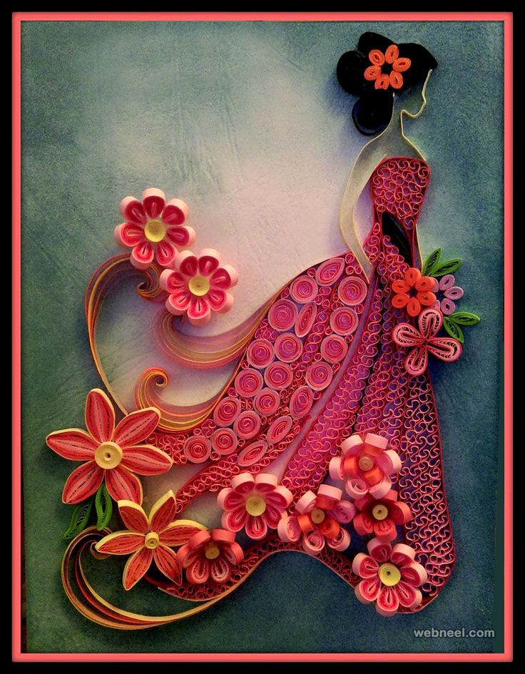
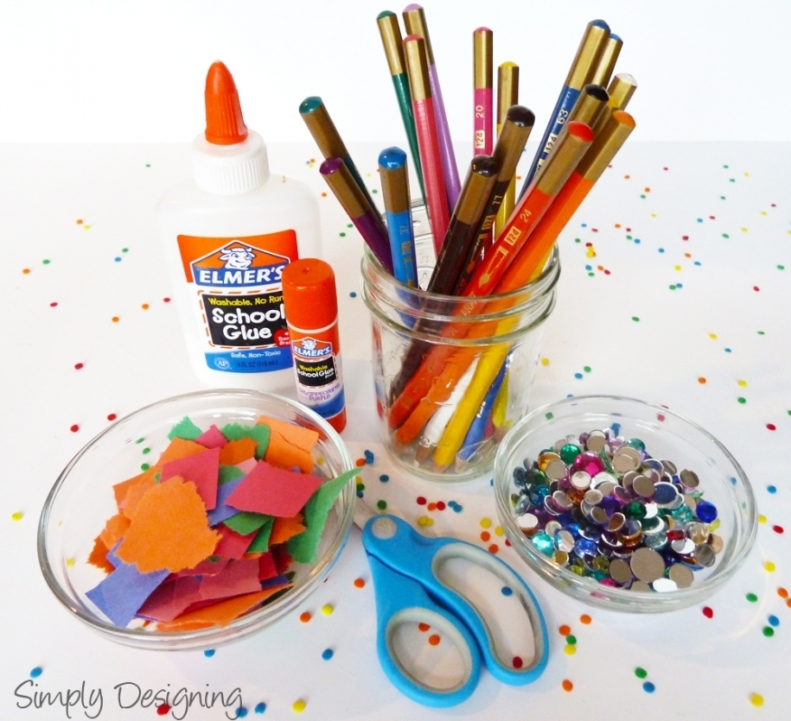
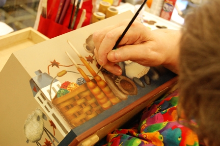

About



Arts and crafts describes a wide variety of activities involving making things with one's own hands. Arts and crafts is usually a hobby. Some crafts (art skills) have been practised for
centuries, others are more recent inventions. William Morris, John Ruskin and others promoted an "arts and crafts" movement in the late 19th century, which popularized the phrase.
6 Fantastic Benefits of Arts and Crafts for Kids are:-
- It improves their coordination and fine motor skills. ...
- It helps them express themselves. ...
- It makes them more creative and productive. ..
- It helps them develop other skills. ...
- It inspires them to think critically. ...
- It helps them socialize...